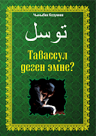

Таза суу менен колду чыканак менен бирге, бетти, томук (кызыл
ашык) менен
кошо бутту жуу жана башка масх тартуу түрүндө жүзөгө ашкан өзгөчө тазалык «даарат» деп
аталат.
Маида сүрөсүнүн 6-аятында намазга тураардан мурун даарат алуу зарылчылыгы
тууралуу төмөнкчө буюрулат: «О, ыйман келтиргендер! Намазга турганыңарда
жүзүңөрдү жана колуңарды чыканагы менен бирге жуугула, башыңарга масх тарткыла,
бутуңарды кызыл ашыкка чейин жуугула».
Мухаммад Пайгамбарыбыз да дааратсыз окулган намаздын жараксыз
болгондугу жөнүндө бир топ куттуу хадистеринде айтып кеткен. Ислам аалымдары Куран
менен Сүннөткө таянуу менен намаз окуу үчүн даарат алуу ар бир мусулман адамга парз
болгондугун бир пикирден кабылдашкан.
Даарат – баарынан мурда ар түрдүү материалдык жана
руханий ыплас-кирлерден оолак болуу үчүн Ислам дини талап кылган өзгөчө мааниге ээ
тазалык болуп эсептелет. Ооздон баштап бети-колду жана бутту күндө беш маал жуунун өзү
эле дин Исламдын тазалыкка берген маанисин айгинелеп турат.
Ырас, даараттын негизги
максаты – бул Аллага ибадат кылуу үчүн пенденин руханий жактан даярданышында жатат.
Даарат алган адам өзгөчө руханий жактан өзүн таза жана сергек сезет. Ал мына ушундай
таза сезим менен Аллага ибадат кылууга турат. Даарат алуу менен эки дүйнө бактысы талап
кылган көптөгөн жакшылык артыкчылыктарга ээ болууга болот. Ардактуу Мухаммад
Пайгамбарыбыз мындай дейт:
«Бир мусулман адам даарат алып жүзүн жууганда жүзү менен
кылган бардык күнөөлөрү, колу-бутун жууганда колу-буту менен кылган бардык катачылыктары
суу тамчылары менен бирге агып кетет да, таптаза болот. А түгүл кирпиктери менен
тырмактарынын түбүндөгү күнөөлөрдөн да эч нерсе калбайт. Даараттын адеп-шарттары менен
даарат алып бүтүп, кыбылага карап: «Ашхаду ан лаа илааха иллаллаах, лаа шариика
лаху. Ва ашхаду анна Мухаммадан абдуху ва Расуулуху» деген адам үчүн
бейиштин эшиктери ачылат. Ал адам каалаган эшигинен бейишке кирет».
(Муслим, Тахарат, 32, 33; Тирмизи, Тахарат, 2)
Даараттын парз-сүннөттөрүнүн дагы да толук болушу үчүн зарыл жагдайлар «даараттын адептери» деп аталат. Даараттын негизги адептери төмөнкүлөр:
Даарат ала турган адам алгач даарат алууга ниет кылат. Андан соң «Бисмиллаахир-Рахмаанир-Рахиим» деп, эки колун билекке чейин жууйт. Үч жолу оң колу менен менен оозуна суу алып чайкап, кайра түкүрөт. Андан кийин үч жолу оң колу менен мурунга суу алып, сол колу менен чимкирет. Кийин үч жолу бетин жууйт. Эгер сакалы болсо манжаларын сакалынын арасына киргизип, сакалын салаалайт. Алгач оң, андан кийин сол колун чыканактары менен кошо үч жолу жууйт. Андан соң башына, кулактарына жана мойнуна масх тартат. Сол колу менен бутун манжаларынын учтарынан баштап томукту кошо үч жолу жууйт. Мында да алгач оң бут, анан сол бут жуулат. Бут манжаларынын салааларында кургак жер калбашы керек. Ал үчүн бут манжаларынын салааларын жакшылап жуу зарыл. Даарат алып бүткөндөн кийин күбөлүк (шахадат) келмесин айтуу абзел.
Дааратты жараксыз кылбаса да, орундуу болбогон (жакшы эмес) нерселер даараттын макирөөлөрү болуп саналат. Аларды төмөнкүчө тизмелөөгө болот (булар «танзихан-жеңил» макирөөлөр):
Даараттын парздары аятта көрсөтүлгөн. Даараттын парздарынан бири аткарылбаса, анда ал даарат жараксыз болуп эсептелет. Даараттын парздары төртөө. Алар:
Бет: Чач чыккан жерден баштап ээктин астына чейин жана кулактардын түбүнө
чейинки аралык бет болуп эсептелет. Сакал менен кулактын ортосундагы түксүз
аралык да бетке кирет. Демек, ал жерди да жууш керек. Эгер сакал коюу болсо
сакалды сылап койсо жетиштүү болот. Мындай учурда сакалдын астын (терини)
жуу зарылчылыгы жок.
Кол чыканак менен кошо жуулат. Манжада шакек болсо,
анын алдын жууш керек.
Бутту томук менен кошо жууш керек. Аятта «каабайн»
деп эки томуктун аталышы бутту томук менен кошо жууга ишарат жасайт.
Пайгамбарыбыз даарат алуу учрунда бутун кылдаттык менен жуубаган бир
адамга: «Эх-х, ошол тозок отунда азап тарта турган томуктарга...» деп
эскертүү берген (Бухари, Вудуу, 27, 29; Муслим, Тахара, 25-28). Көптөгөн
куттуу хадистерде Пайгамбарыбыз даарат алганда дайыма бутун томуктары
менен кошо жуугандыгы айтылат. Мына ошондуктан ахли сүннөт вал жамаат
аалымдары бутту жуу парз, ал эми жылаңайлак бутка масх тартуу жараксыз
болгондугун бир ооздон кабылдашкан.
Даарат алуу учурунда жуулушу зарыл
болгон мүчөлөрдө кургак жер калтырбоо кажет. Сууну териге өткөрбөй турган
нерселер дааратка терс таасирин тийгизет. Бирок, кандайдыр бир
үзүр-себептен улам сууну териге өткөзбөгөн нерселер дааратка зыян бербейт.
Маселен, иштеген жумушунан улам даарат алуу учурунда сууну териге өктөрбөгөн
нерселерди (м: боек) алгач мүмкүнчүлүктүн жетишинче кетирүүгө аракет кылуу
кажет. Эгер териге жабышып калган боек толук кетпесе, ашкере кыйналуунун
кажети жок. Буга малярларды (боекчулар), усталарды мисал келтирүүгө болот.
Даараттын 15 сүннөтү бар:
Тигил же бул намаз убагынын аралыгында дааратты бузуучу нерселерден бири үзгүлтүксүз келип турса, анда ал адам үзүрлүү болуп эсептелет. Маселен, буга зааранын тез-тезден келиши, жаранын тез-тез канап турушу, аял кишиден айыз (этек кири) жана нифас (төрөттөн кийин келе турган кан) абалдарынан сырткаркы учурларда токтобой келген суюктугу сыяктуу абалдарды мисал келтирүүгө болот. Мына ушундай үзүрлүү адам тигил же бул намаздын убагы киргенде даарат алса, ошол намаздын убагы чыкканга чейин даараттуу болуп эсептелет. Бул жерде эскерте кетчү жагдай, ал адамдан үзүрүнөн (м: заарадан) сырткары дааратты буза турган нерселер чыга турган болсо, даарат бузулган болот. Үзүрлүү адам даарат алган соң намаз убагы чыкканга чейин каалаганынча парз, важип жана напил намаздарын окуса болот. Ошондой эле ал Каабаны таваф кыла алат, Куранды колго алып кармай да алат.
Ислам дининде ибадаттардын туу чокусунда намаз турат. Намаз бул мусулман
адамдын жашоосун белгилүү нукка салган эң маанилүү ибадаттардын бири. Сүйүктүү
Пайгамбарыбыз куттуу хадистеринин биринде: «Намаз – диндин түркүгү» деп айткан
(Тирмизи, Иман, 8).
Намаздын өзгөчө мааниге ээ болушунун өзүнчө себеп-хикматтары бар: Эң
оболу намаз пендеге Алланын кулу экендигин, мына ошол себептен белгилүү иш-аракеттерге
карата жооптуу болгондугун эске салат. Адам күнүнө беш маал намаз окуу менен жан-дүйнө
жакырлыгынын алдын алган болот. Бул багытта Алла Таала Куранда мынтип буюрат:
«Мени эстөө үчүн намаз оку!» (Тоха 14).
Намаз инсандын психологиясына өзүнүн олуттуу оң таасирин тийгизет.
Аятта: «О, ыйман келтиргендер! Сабырдуулук жана намаз менен
жардам сурагыла!» (Бакара 153) деп буюрулат.
Намаз – жаман иштерге барууга бөгөт болот. Сойкулук, шылуунчулук,
каракчылык, уурулук, алдамчылык сыяктуу бузуку иштерден оолак кармайт.
Адамдын материалдык жана моралдык жактан таза жүрүүсүн камсыздайт.
Намаз адамды күнөөлөрүнөн да тазалайт. Бул багытта куттуу хадистердин биринде төмөнкүчө
айтылат: Күндөрдүн биринде Азирети Мухаммад саллаллаху алейхи васаллам сахабаларына
кайрылып: «Бирөөңөрдүн эшигинин алдында бир дарыя агып турат дейли. Анан ал адам, күн
сайын ошол дарыяга түшүп, тазаланып турса, анда кир калат деп ойлойсуңарбы?» – деп
суроо узатат. Анда сахабалар бир ооздон: Жок, оо, Алланын Элчиси! деп жооп беришет. Анда
Пайгамбарыбыз: «Беш маал намаз окуу да дал ушундай. Суу кирди кандай жууп кеткен
болсо, намаз да күнөөлөрдү ошондой жууп кетирет» – деген экен (Бухари, Мавакыт, 6).
Намаздын күнөөлөрдү жууп кетирерин эки өңүттөн кароого болот. Биринчиси,
хадистерде белгиленгендей тигил же бул эки намаздын ортосунда жүзөгө ашкан күнөөлөрдүн
кечирилишине себеп болушу. Эскерте кетчү жагдай, бул жерде кичине күнөөлөр жөнүндө сөз
болууда. Кичине күнөөлөрдү жууп кетирген намаздан башка дагы нерселер бар. Төмөнкү
аяттарда:
«Эгер тыюу салынган чоң күнөөлөрдөн оолак болсоңор, кичине
күнөөлөрүңөрдү жаап, силерди Бейишке киргизебиз» (Ниса сүрөсү, 31)
«Алар оор күнөөлөрдөн, бузуку иштерден алыс турушат,
ачуусу келгенде кечиримдүү болушат» (Шуура, 37)
«Оор күнөөлөрдөн жана (сойкулук сыяктуу) ыпластыктардан
сактангандардын
кичине күнөөлөрү болсо да, аларга Жараткан Эгеңдин кечирими кең!» (Нажм 32)
деп
буюрулуп, чоң-кичине күнөөлөр менен катар чоң күнөөлөрдөн оолак болуу кичине күнөөлөрдүн
кечирилишине себеп болору жөнүндө айтылууда. Намаздын айрым бир катачылыктарды жууп
кетиришинин экинчи мааниси мындай; намаз күнөө иштерге барбоо зарылчылыгын талап кылуу
менен мындай иштерге тоскоол болушу «күнөөлөрдү кетирүүгө» себеп болору айтылган.
Намаздын бул өзгөчөлүгү туурасында аяттардын биринде:
«Намаз (адамды) ыплас иштерден, күнөөлөрдөн оолак кармайт» (Анкабут 45)
деп буюрулат.
Намаз руханий ыпластыктар менен бирге материалдык кирлерди да
тазалайт. Ырас, намаз окуган адам даарат алган сайын бетин, колу-бутун жууйт. Эгер
зарыл болсо, даараттан мурун жунуп абалынан жана нажасаттан тазалануу да намаздын талабы
болуп саналат. Демек, намаз окуган адам жунуп абалында жүрө албайт, денесинде,
кийиминде же намаз окуй турган жеринде кандайдыр бир ыпластык болбойт. Ал буларга
колдон келишинче этият болууга мажбур. Болбосо намазы жараксыз абалга келип калышы толук
ыктымал. Ошондой эле ал үйүн, айлана-чөйрөсүн да таза кармоого милдеттүү. Ошондуктан
намаз окуган адам тазалыкка материалдык жактан да, руханий жактан да өзгөчө көңүл
бөлүшү керек.
Мусулман баласынын намаз окубашы чоң күнөө болуп эсептелет. Намаз
окубаган адам дароо тооба кылып, Жараткан Алладан кечирим тилеп, окубаган намаздарынын
казаларын кайтарып окуусу зарыл.
Аввабин намазы: Бул сөз - «көп-көп тооба кылып,
кечирим сурап Алла Таалага кайрылуучу адам» деген мааниде. Аввабин намазы
шам намазынан кийин эки рекеттен алты рекетке чейин окулчу намаз. Бул
намаздын далили мына бул аят:
«Жаратканыңар жан-дүйнөңөрдөгүнү жакшы билет.
Эгерде жакшы адам болсоңор, анда Аллах жамандыктан кол жууп, тообого бет
алгандарды (Аввабиндерди) толук кечирет» (Исра 25).
Аммар бин Ясирден (р.а.) бул хадис баяндалган: «Кимде-ким
шам намазынан соң
алты рекет намаз окуса, Алла Таала деңиздин көбүгүндөй болсо да күнөөлөрүн
кечирет».
Айт намазы орозо жана курман айт күндөрү жылына эки жолу окулат. Айт намазы жума намазын окууга милдеттүү адамдар үчүн важип болуп эсептелет. Айт намазынын толук орундалышынын шарттары жума намазыныкы сыяктуу. Ошону менен бирге айт намазында кутпа шарт эмес, сүннөт. Айт намазында кутпа намаздан кийин окулат.
Витр намазы үч ирекеттен туруп, важип өкүмүндөгү
намаз болуп саналат. Үчүнчү ирекетте рукудан мурун такбир алып, кунут
дубасын окуу да важип.
Витр намазынын убагы куптан намазынан кийин башталып
багымдат намазына чейин уланат. Витр намазын түндүн акыркы бөлүгүндө окуу
абзел.
Витр намазы Рамазан айында гана таравих намазынан кийин жамаат менен
окулат. Витр намазы жамаат менен окулган чакта имам ар бир ирекеттин
кыраатын үнүн чыгарып окуйт. Витр намазында имам да, жамаат да кунут
дубасын купуя (ар ким өз ичинен) окуйт.
Жаназа намазы мусулман маркумдарга дуба кылуу максатында окулган намаз. Жаназа намазы парз-ы кифая. Жаназа намазында руку-сажда болбойт. Жаназа намазга турган адам даарат алып кыбыла тарапка бурулуп турушу керек. Жаназа намазынын рукуну кыям жана такбир болуп эсептелет. Дубанын да рукун болуп саналарын айткан аалымдар бар.
Жаназа намазынын окулушу
Жаназа намазы төмөнкүчө окулат: алгач «Алла ыраазылыгы үчүн
береги эркек
кишинин (же аял же болбосо кыз же эркек баланын) жаназа намазын окууга ниет
кылдым» деп ниет кылынып, «Аллаху акбар» деп такбир алынып «субханака»
дубасы окулат. Андан кийин имам колун көтөрбөй туруп үндү бийик көтөрүп
«Аллаху акбар» деп такбир алат, жамаат да жашыруун үн чыгарбай такбир алат.
Андан соң «салли-баарик» дубалары окулат. Имам дагы үн чыгарып такбир алган
соң, жаназа дубасы окулат. Жаназа дубасын билбегендер «Роббанаа аатина..»
дубасын окушса болот. Андан кийин төртүнчү такбир алынып, салам берилет.
Жаназа намазында жамааттын көп болушу мустахап. Асыресе, жаназа намазы бир
киши тарабынан окулушу менен парз орундалган болот. Аял кишилер да жаназа
намазына кошулушса болот. Аялдар эркектердин арка тарабынан сапка
тизилүүлөрү абзел.
Жаназа намазы окулбай көмүлгөн маркумдун жаназа намазын арадан көп убакыт
өтпөсө, окуса болот. Буга Пайгамбарыбыз өзү үлгү болуп берген.
Жаназа намазына кеч келип калган адам дароо такбир алып, эч нерсе окубай
калтырылган такбирлерди алуу менен жаназа намазын толуктаган болот.
Күн чыгып келатканда, төбөдө турганда жана батып баратканда жаназа намазы
окулбайт.
Жаңы төрөлүп көз жумган ымыркайды жууп, кепиндеп, ат коюп, анын жаназа
намазын окуса да болот. Ал эми жансыз төрөлгөн ымыркайдын жаназасы
окулбайт. Аны жуунун да кажети жок, бир кездемеге ороп, көмүү керек.
Эч бир себепсиз атайын ата-энесин өлтүргөн адамдын жана каракчылык учурунда
өлтүрүлгөн кылмышкердин жаназа намазы окулбайт.
Ислам дини оор жагдайларда ибадаттарды жеңилдетүүгө
жол ачып, анын өзүнчө жол-жоболорун, эрежелерин койгон. Мындай оор
учурлардын бири – сапар учуру. Сапар намазы жөнүндө Ыйык Куранда төмөнкүчө
буюрулат: «Сапарга чыкканыңарда каапырлардын силерге жамандык
келтирүүсүнөн чочуласаңар, анда намазыңарды кыскартып окусаңар болот,
күнөө болбойт» (Ниса 101). Ошону менен бирге куттуу хадистерде
Азирети Пайгамбарыбыздын сапар учурунда намаздарын кыскартып окугандыгы
тууралуу маалыматтар бар.
Адам кайсыл учурда жолоочу болуп эсептелери туурасында эки
көз караш бар.
Имам Азам мазхабында фатвага негиз катары каралган пикир боюнча, эң азынан
90 км. аралык сапарга чыгуу шарт. Демек, мындан кыска аралыкка сапарга
чыккан адам жолоочу деп эсептелбейт. Экинчи көз караш боюнча, анүчүн үч
күндүк аралык кажет. Бул боюнча, бир күндүк жол арбытуу убактысы алты саат
болсо, эң азынан 18 сааттык аралыкка бара турган адам жолоочу деп эсептелет.
Жолоочу болуу үчүн отурукташкан чөлкөмдөн чыгуу кажет.
Жолоочу өкүмүндө болуу үчүн барган жерде 15 күндөн аз убакыт
жүрүүгө ниет
коюу керек. Эгер 15 күндөн ашык жүрө турган болсо, жергиликтүү адам сыяктуу
эле намазын кыскартпай толук окуй берет.
Имам Азам мазхабы боюнча, жолоочулар үчүн төрт ирекеттүү
намаздарды эки
ирекет кылып окуу парз. Эгер эки ирекеттен ашык окушса, окулган ашыкча
ирекеттер напил катары эсептелет. Калган үч агым боюнча, төрт ирекеттүү
намаздардын эки ирекет болуп окулушу сүннөт. Тагыраак айтканда, жолоочу
адам бул учурда кааласа төрт ирекет, кааласа эки ирекет окуйт.
Сапар учурунда төрт ирекеттүү намаздар гана эки ирекет болуп
окулат. Үч
ирекеттүү намаздар үч ирекет боюнча окулат.
Бул учурда мүмкүнчүлүк болсо, парз намаздар менен бирге
муаккад сүннөттөрдү
да окуу керек.
Сапар учурунда казага калган төрт ирекеттүү намаз сапардан
кийин сапар
учурундагыдай, эки ирекет болуп окулат.
Жолоочу адам жергиликтүү адамга имам боло алат. Бул учурда
төрт ирекеттүү
намазда жолоочу имам эки ирекетин толуктап эки жакка салам берген соң
жергиликтүү адам же жамаат салам бербестен өйдө туруп, имамдын аркасында
турган таризде кыраат кылбай толуктайт.
Жолоочу адам жергиликтүү имамга уюса, намазын имам менен
бирге төрт ирекет
окуйт. Бул учурда эки ирекет окууга уруксат берилбейт.
Адамдын туулуп өскөн журту шариятта «асыл жер», он беш
күндөн ашык жүрө
турган жери «икамат», ал эми он беш күнгө чейин боло турган жери «сукна»
деп айтылат. «Асыл» жана «икамат» жерлеринде сапар учурундагы өкүмдөр
аткарылбайт.
Аввабин намазы: Бул сөз - «көп-көп тооба кылып,
кечирим сурап Алла Таалага кайрылуучу адам» деген мааниде. Аввабин намазы
шам намазынан кийин эки рекеттен алты рекетке чейин окулчу намаз. Бул
намаздын далили мына бул аят:
«Жаратканыңар жан-дүйнөңөрдөгүнү жакшы билет.
Эгерде жакшы адам болсоңор, анда Аллах жамандыктан кол жууп, тообого бет
алгандарды (Аввабиндерди) толук кечирет» (Исра 25).
Аммар бин Ясирден (р.а.) бул хадис баяндалган: «Кимде-ким
шам намазынан соң
алты рекет намаз окуса, Алла Таала деңиздин көбүгүндөй болсо да күнөөлөрүн
кечирет».
Аввабин намазы: Бул сөз - «көп-көп тооба кылып,
кечирим сурап Алла Таалага кайрылуучу адам» деген мааниде. Аввабин намазы
шам намазынан кийин эки рекеттен алты рекетке чейин окулчу намаз. Бул
намаздын далили мына бул аят:
«Жаратканыңар жан-дүйнөңөрдөгүнү жакшы билет.
Эгерде жакшы адам болсоңор, анда Аллах жамандыктан кол жууп, тообого бет
алгандарды (Аввабиндерди) толук кечирет» (Исра 25).
Аммар бин Ясирден (р.а.) бул хадис баяндалган: «Кимде-ким
шам намазынан соң
алты рекет намаз окуса, Алла Таала деңиздин көбүгүндөй болсо да күнөөлөрүн
кечирет».
Аввабин намазы: Бул сөз - «көп-көп тооба кылып,
кечирим сурап Алла Таалага кайрылуучу адам» деген мааниде. Аввабин намазы
шам намазынан кийин эки рекеттен алты рекетке чейин окулчу намаз. Бул
намаздын далили мына бул аят:
«Жаратканыңар жан-дүйнөңөрдөгүнү жакшы билет.
Эгерде жакшы адам болсоңор, анда Аллах жамандыктан кол жууп, тообого бет
алгандарды (Аввабиндерди) толук кечирет» (Исра 25).
Аммар бин Ясирден (р.а.) бул хадис баяндалган: «Кимде-ким
шам намазынан соң
алты рекет намаз окуса, Алла Таала деңиздин көбүгүндөй болсо да күнөөлөрүн
кечирет».
Аввабин намазы: Бул сөз - «көп-көп тооба кылып,
кечирим сурап Алла Таалага кайрылуучу адам» деген мааниде. Аввабин намазы
шам намазынан кийин эки рекеттен алты рекетке чейин окулчу намаз. Бул
намаздын далили мына бул аят:
«Жаратканыңар жан-дүйнөңөрдөгүнү жакшы билет.
Эгерде жакшы адам болсоңор, анда Аллах жамандыктан кол жууп, тообого бет
алгандарды (Аввабиндерди) толук кечирет» (Исра 25).
Аммар бин Ясирден (р.а.) бул хадис баяндалган: «Кимде-ким
шам намазынан соң
алты рекет намаз окуса, Алла Таала деңиздин көбүгүндөй болсо да күнөөлөрүн
кечирет».
Аввабин намазы: Бул сөз - «көп-көп тооба кылып,
кечирим сурап Алла Таалага кайрылуучу адам» деген мааниде. Аввабин намазы
шам намазынан кийин эки рекеттен алты рекетке чейин окулчу намаз. Бул
намаздын далили мына бул аят:
«Жаратканыңар жан-дүйнөңөрдөгүнү жакшы билет.
Эгерде жакшы адам болсоңор, анда Аллах жамандыктан кол жууп, тообого бет
алгандарды (Аввабиндерди) толук кечирет» (Исра 25).
Аммар бин Ясирден (р.а.) бул хадис баяндалган: «Кимде-ким
шам намазынан соң
алты рекет намаз окуса, Алла Таала деңиздин көбүгүндөй болсо да күнөөлөрүн
кечирет».
Аввабин намазы: Бул сөз - «көп-көп тооба кылып,
кечирим сурап Алла Таалага кайрылуучу адам» деген мааниде. Аввабин намазы
шам намазынан кийин эки рекеттен алты рекетке чейин окулчу намаз. Бул
намаздын далили мына бул аят:
«Жаратканыңар жан-дүйнөңөрдөгүнү жакшы билет.
Эгерде жакшы адам болсоңор, анда Аллах жамандыктан кол жууп, тообого бет
алгандарды (Аввабиндерди) толук кечирет» (Исра 25).
Аммар бин Ясирден (р.а.) бул хадис баяндалган: «Кимде-ким
шам намазынан соң
алты рекет намаз окуса, Алла Таала деңиздин көбүгүндөй болсо да күнөөлөрүн
кечирет».
Аввабин намазы: Бул сөз - «көп-көп тооба кылып,
кечирим сурап Алла Таалага кайрылуучу адам» деген мааниде. Аввабин намазы
шам намазынан кийин эки рекеттен алты рекетке чейин окулчу намаз. Бул
намаздын далили мына бул аят:
«Жаратканыңар жан-дүйнөңөрдөгүнү жакшы билет.
Эгерде жакшы адам болсоңор, анда Аллах жамандыктан кол жууп, тообого бет
алгандарды (Аввабиндерди) толук кечирет» (Исра 25).
Аммар бин Ясирден (р.а.) бул хадис баяндалган: «Кимде-ким
шам намазынан соң
алты рекет намаз окуса, Алла Таала деңиздин көбүгүндөй болсо да күнөөлөрүн
кечирет».
«Чындыгында Алла Таала жана Анын периштелери пайгамбарга салават айтышат. Эй, момундар! Силер да ага салават жана салам айткыла!» (Ахзаб сүрөсү, 56-аят)
Хадис:
«Ким мага бир жолу салават айтса, Алла Таала ага он жолу салават айтат.
Ошондой эле анын он катачылыгы өчүрүлүп, он даражага жогорулайт»
(Насаий, Сахв, 55).
«Кыямат күнү адамдардын арасынан мага эң жакын боло тургандар –
булар мага эң көп салават айткандар болот!» (Тирмизий, Витр, 21).
Аллахтын элчисин (САВ) сүйүү ыймандан, биз үчүн важиб болуп саналат. Пайгамбарыбыз (САВ) азирети Умардын: “Эй, Аллахтын элчиси! Мен сени напсимден башка бардык нерседен артык көрүп, сүйөмүн” деген сөзүнө: “Эй, Умар, мени напсиңден да артык көрүп сүймөйүнчө, ыйман келтирген адам болуп эсептелбейсиң” деген. Муну уккан азирети Умар: “Азыр сени өзүмөн да артык көрүп, жактырамын” деп айткан. Албетте кур эле жактыруу эч нерсеге татыбайт. Жүрөк менен сүйүп, тил менен айтып, кылган иш-аракеттер аркылуу сүйүүнү билдирүү керек. Сүйүүнүн кээ бир белгилери болот. Пайгамбарыбызды (САВ) сүйүүнүн жышаандарына ээ болууну каалабайбызбы, албетте каалайбыз. Дал ошол белгилердин бир канчасы төмөнкүлөр:
Алтынчы сыр: Эй чексиз алсыздык менен чексиз
жардылыкта тоголонуп бараткан бечара инсан! Ырайымдын кандай гана баалуу бир себепчи
жана кандай гана кабыл болунган шапаатчы экенин мына мындан билип ал: Ал ырайым –
жылдыздар менен атомдор бирге укмуштуудай тартип жана баш ийүү менен кошуунунда чогуу
кызмат кылып жатышкан Айбаттуу Падышага жетүүгө себеп болот. Жана ошол Айбаттуу,
Эзелтеден баштап Түбөлүктүү Падышанын эч кимге жана эч нерсеге муктаждыгы жок. Толук
беймуктаждык ичинде. Эч бир жагынан ааламга жана жаратылган нерселерге муктаждыгы
болбогон Ганий-и Алал-ытлак (Чыныгы байлык Ээси). Бүткүл аалам буйругу астында,
башкаруусунда, айбаты менен улуулугу астында толук баш ийүү менен Айбатына чөгөлөшөт.
Мына, эй инсан! Ырайым сени ошо эч нерсеге муктаж болбогон жана Түбөлүктүү Падышанын
алдына чыгарат, Ага дос кылат, Ага маектеш кылат жана сүйүктүү пендесине айлантат.
Бирок, Күндүн жарыгы Күндүн чагылуусун сенин күзгүң аркылуу сенин колуңа берип турса да,
сен Күнгө жете албайсың, анткени өтө узаксың, эч качан ага жакындай да албайсын. Дал
ошол сыяктуу, Аллах Таалага, Эзелтеден баштап Түбөлүккө чейин нурун чачып келаткан
Жаратуучубузга биз чынында абдан алыспыз, жете албайбыз. Бирок Анын Ырайым нуру Аны
бизге жакындатууда.
Мына, эй инсан! Бул ырайымды тапкан түбөлүктүү түгөнбөс Нур казынасын
тапкан болот. Ал казынаны табуунун чарасы: Ырайымдун эң жаркыраган мисалы, өкүлү, ошол
ырайымдын эң чечен тили болгон жана «Рахматал-лил ааламиин» наамы менен Куранда айтылган
Расул Акрам Алейхиссалаату Вассаламдын сүннөтү жана ага баш ийүү болуп эсептелет. Ал эми
ушул «Рахматал-лил ааламиин» болгон денелешкен ырайымга жетүүнүн себеби болсо – салават
айтуу. Ооба, салаваттын мааниси да ырайым. Мына ошол денелешкен жандуу ырайымга ырайым
дубасы болгон салават болсо, ошо «Рахматал-лил ааламиин»ге жетүүгө себепчи болот. Андай
болсо сен салаватты өзүңө ошо «Рахматал-лил ааламиин»ге себепчи кыл жана ал затты да
Мээримдүүнүн ырайымына жетүүгө себепчи кылып ал. Бардык үммөттүн «Рахматал-лил ааламиин»
болгон Алейхиссалаату Вассалам үчүн чексиз салават айтуулары, ырайымдын кандай баалуу
Аллахтын белеги жана кандай гана кенен чөйрөсү бар болгондугун жаркыраган түрдө далилдеп
турат.
Корутунду: Ырайым казынасынын эң баалуу бриллианты жана
дарбазачысы Мухаммад Алейхиссалаату Вассалам болгону сыяктуу, эң биринчи ачкычы да:
«Бисмиллахир-рахманир-рахим» болуп саналат. Ал эми анын эң оңой ачкычы
да салават болуп эсептелет.
للّٰهُمَّ بِحَقِّ اَسْرَارِ بِسْمِ اللّٰهِ الرَحْمٰنِ الرَّحِيمِ صَلِّ وَ سَلِّمْ عَلَى مَنْ اَرْسَلْتَهُ رَحْمَةً لِلْعَالَمِينَ كَمَا يَلِيقُ كَمَا يَلِيقُ بِرَحْمَتِكَ وَ بِحُرْمَتِهِ وَ عَلَى اٰلِهِ وَ اَصْحَابِهِ اَجْمَعِينَ وَ ارْحَمْنَا رَحْمَةً تُغْنِينَا بِهَا عَنْ رَحْمَةِ مَنْ سِوَاكَ مِنْ خَلْقِكَ اٰمِينَ

Бул чакан китепчеде Ислам акыйдасындагы тавассулдун орду, Куран менен
Сүннөттөгү далилдери жана анын түрлөрү жөнүндө сөз болот.
Учурубуздун эң чоң ооруларынын бири – өздөрүнүн бузук
пикирлерин жайылтуу үчүн Ахли сунна аалымдарына каршы
Куран менен Сүннөткө төп келбеген аракеттерди жасашууда.
Көптөгөн адамдар бул оорунун айынан эч кандай далилсиз эле
Ахлу сунна ишенимине каршы тирешүүдө. Эң эле аянычтуусу
итикаддын (ишенимдин) далилдерин билишпеген карапайым
калктын ошондой адамдарга ишенип алуусу жана өздөрү
билбестен Ахли суннанын алкагынан чыгып кетүүсү. Ошондой
маселелердин бири да тавассул маселеси.
Адам баласынын бардык максаттарына алып барчу
жолдордун ар бири өз-өзүнчө себеп болуп эсептелет. Аллахка
жакын пенде болуу үчүн бул себептерди колдонуу «тавассул»
деп аталат. Тагыраак айтканда, тавассул – бул дубанын кабыл
болуусуна себепчи болот деген үмүт менен Аллах Тааланын
ысым-сыпаттарынын, Ыйык Курандын, жакшылык иштердин,
пайгамбарлардын жана салих, олуя пенделердин урматы үчүн
жалгыз Аллах Тааладан бир нерсе тилөө, сурануу, жалынып-
жалбаруу дегенди түшүндүрөт...
Китепче Ислам ишенимдерине кызыккан жалпы окурмандарга арналат...
Түзгөн: Чыныбек Козукеев. Форматы: PDF 1,2Мb. Сапаты жакшы.
Уландысын алдынкы шилтемеден жүктөп алсаңыз болот:
Жүктөп алуу үчүн басыңыз.